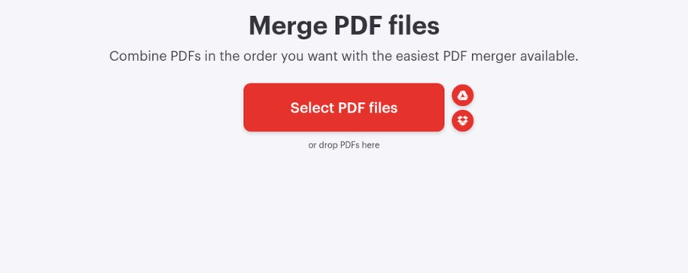
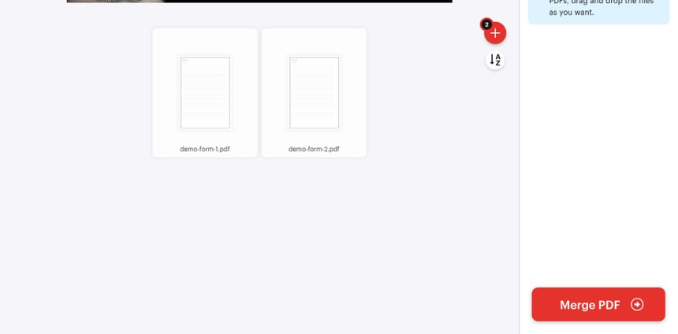
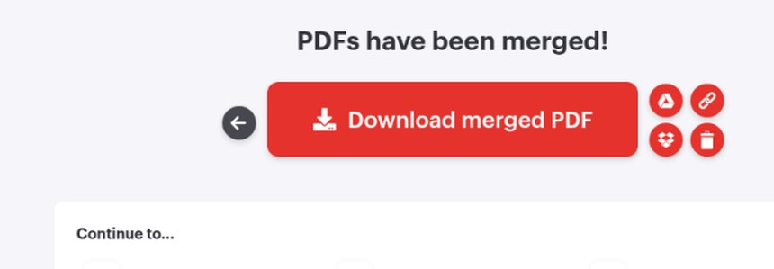

跟 Reel 用 iLovePDF 嘅「Merge PDF」（唔使登入）：撳「Select PDF files」上載幾份掃描，拖曳排好次序再撳「Merge PDF」，見到「PDFs have been merged!」就撳「Download merged PDF」。附真實畫面截圖（2026-10-10 自行截圖），同免費版檔案上限、私人文件嘅提醒。示範用虛構 demo-form，唔好上傳有真實身份號碼嘅正式件。
Reel 一句講晒：幾張證件／申請掃描要交網上表？iLovePDF 免登入合併，排好次序再下載一個 PDF
你會學到
- 點樣開 iLovePDF「Merge PDF」唔登入揀幾份 PDF 上載
- 點樣拖曳調頁序，再撳 Merge PDF 合併
- 合併完點下載，上載去對方表格前要留意咩
開始前準備
- 手機或電腦瀏覽器開 ilovepdf.com 嘅「Merge PDF」（示範用英文介面，冇登入）
- 要合併嘅幾份 PDF（示範用自製虛構 demo-form-1.pdf、demo-form-2.pdf）
- 睇清楚交表要求嘅頁序同檔案大細限制
3 步做法
撳 Select PDF files：開 ilovepdf.com 嘅「Merge PDF」（唔使登入），撳紅色「Select PDF files」，揀要合併嘅幾份 PDF。
頁面標題係「Merge PDF files」；撳紅色大掣就會開檔案選擇，亦可以將 PDF 拖入頁面（「or drop PDFs here」）。
官方價目表「Filesize per task」一欄寫 Merge PDF 免費 Basic 100 MB（付費欄顯示 4 GB）；額度可能更新，以官網為準。

真實畫面（2026-10-10 自行截圖，冇登入；已裁走頁底廣告）：撳紅色「Select PDF files」揀檔。 拖曳排次序，撳 Merge PDF：上載後見到檔案卡，可拖曳調頁序；排好就撳右側紅色「Merge PDF」。
畫面提示「To change the order of your PDFs, drag and drop the files as you want.」；右側有紅色「＋」可再加檔，示範已上載 demo-form-1.pdf、demo-form-2.pdf（共 2 份）。
「Merge PDF」紅色掣喺右側欄底部；次序要對齊申請／交表要求先撳。

真實畫面（2026-10-10 自行截圖；已裁走頂部廣告）：排好次序後撳「Merge PDF」。 撳 Download merged PDF：見到「PDFs have been merged!」就撳「Download merged PDF」。
成功頁標題係「PDFs have been merged!」，紅色掣就係「Download merged PDF」。下載後打開確認頁序同內容齊唔齊，先上載去對方網站。
官方安全頁寫處理過嘅檔案兩小時內自動永久刪除，下載頁亦可以自己手動刪除（垃圾桶掣）。

真實畫面（2026-10-10 自行截圖）：見到合併成功就撳「Download merged PDF」。
常見錯誤／注意事項
- 唔排次序就合併：交表通常有指定頁序；上載後先拖曳排好，再撳 Merge PDF。
- 一次塞太大檔：免費 Basic 版 Merge PDF 官方價目表寫 Filesize per task 100 MB；太大就先壓縮或分開處理，額度以官網為準。
- 下載完唔檢查：上載前打開合併檔，確認每頁齊、次序啱。
- 私人文件照上載：身份證、銀行資料等私人文件上載前要考慮私隱；示範用虛構文件，唔好上傳有真實身份號碼嘅正式件。
示範檔係自製虛構 demo-form，冇真人身份號碼。私人文件上載任何網上工具之前，先諗清楚私隱風險。
香港用戶留意
ilovepdf.com 網頁版用瀏覽器開就用得，示範冇登入、冇裝 App（示範喺我哋電腦瀏覽器測）。免費額度同檔案上限以官網價目表當日為準。
官方說明
- 合併PDF（iLovePDF 官方工具頁）
2026-10-11 核實：官方 Merge PDF 工具頁（英文介面回 200；zh-tw/merge_pdf 亦 200）；示範冇登入，Select PDF files → 拖曳排次序 → Merge PDF → Download merged PDF - 壓縮PDF（iLovePDF 官方工具頁，繁體中文）
2026-10-07 核實：官方壓縮 PDF 工具頁；示範冇登入，揀檔 → 揀壓縮層級（預設「推薦的壓縮」）→ 壓縮PDF → 下載 - Pricing（iLovePDF 官方價目表）
2026-10-11 再核實：Filesize per task 一欄寫 Merge PDF 免費 Basic 100 MB、付費 4 GB；Compress PDF 免費 Basic 200 MB；額度可能更新，以官網為準 - iLovePDF Security & Data Protection（iLovePDF 官方）
2026-10-11 再核實：官方寫處理過嘅檔案會喺兩小時內自動永久刪除，下載頁亦可以自己手動刪除；私人文件上載前仍要自己考慮
（以上連結當日逐條打開核對；介面同額度可能更新，以官方為準）
原帖
睇原 Reel ↗（2026-10-11 發佈）